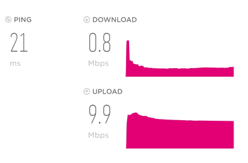
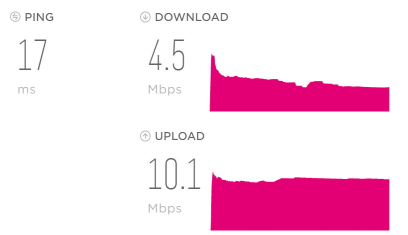

Liebe Community!
Da in unserem ländlichen Gebiet ein schnelles Internet mit Kabel kaum möglich ist, aber laut der Netzkarte sollte es LTE-Advanced geben. Ich habe daher den Magenta-Flex Youth 50 Tarif versucht. Mir ist klar, dass die beworbenen 50 MBit/s realistischerweise nicht erreicht werden. Es würden mir schon 20, meinetwegen 15 MBit/s genügen. Heute Nachmittag hatte ich allerdings 5 MBit/s, stellenweise sogar 2 MBit/s. Momentan (16:30 Uhr) habe ich gerade 8 Mbit/s.
Meine Fragen:
1) Ich bin leider kein Technik-Genie (eher das Gegenteil davon). Laut dem Modem (Huawei 4G B535) ist die Signalstärke maximal (zumindest laut Strichanzeige). Wie geht man in so einer Situation am besten vor?
2) Im Tarif steht: Im Einklang mit der EU Verordnung 2015/2120 informieren wir Sie auf ihrem Vertragsformular über die geschätzte maximale Bandbreite des Mobilfunkanteils an der Vertragsadresse.
Aber wo finde ich das? Bzw. kann man irgendetwas tun, wenn die Geschwindigkeit über längere Zeit sehr niedrig bleibt?
3) Ich habe das Internet vor ein paar Tagen online bestellt - gilt hier das 14-tägige Widerrufsrecht? Oder muss ich die 2-jährige Bindung ertragen?
Ich bin für jede Antwort dankbar!
Hey
@JohnLemon
Wie führst du denn den Test durch?
Am besten wäre ein per Ethernet Kabel an den Router angeschlossener Computer mit dem Speedtest von Magenta oder dem Netztest der RTR.
Sollte Ethernet keine Option ein, dann zumindest per 5GHz W-Lan (statt 2.4 GHz W-Lan).
zu 1) Zeigt der Router, wenn du Daten herunterlädst am Webinterface (http://192.168.1.1 hier eine Anleitung wie du dorthin kommst) 4G+ (LTE-Advanced) oder nur 4G (LTE) an?
zu 3) Ja, das FAGG gilt auch in diesem Fall. Hier die Infos: AGB – Fernabsatz & Widerrufsbelehrung und Muster-Widerrufsformular
LG NTM
vor 16 Stunden schrieb JohnLemon:3) Ich habe das Internet vor ein paar Tagen online bestellt - gilt hier das 14-tägige Widerrufsrecht? Oder muss ich die 2-jährige Bindung ertragen?
vor 11 Stunden schrieb NTM:zu 3) Ja, das FAGG gilt auch in diesem Fall. Hier die Infos: AGB – Fernabsatz & Widerrufsbelehrung und Muster-Widerrufsformular
Schau dir auch die Seite an: https://www.magenta.at/reparatur/#rueckgabe
Danke für eure Antworten!
Da unten eine etwas längere Ausführung folgt, will ich die zentrale Frage gleich am Anfang stellen:
Die einzige Möglichkeit für ein "festes" Internet ist bei uns mit 20 MBit/s begrenzt (wohne in einem ländlichen Gebiet).
Kann ich mit einem "festen" 20Mbit/s - Tarif in den Zeiten von 14 - 24 Uhr eine bessere Verbindung erwarten, als mit dem 50 Mbit/s - Flex Tarif ?
Ich weiß, dass diese Frage wahrscheinlich nicht allgemein beantwortbar ist, weil es von sehr vielen Faktoren abhängt. Mich würde trotzdem eure Einschätzung interessieren.
Hier nun die näheren Infos:
Zum Geschwindigkeitstest: Ich habe den (am Fensterbrett stehenden) Router mit einem Ethernetkabel an meinem PC angeschlossen. Es waren auch keine anderen Geräte mit dem Internet verbunden. Die Signalstärke wird am Router als maximal (volle Strichanzahl) angezeigt - ich habe allerdings keine externe Antenne dazugekauft.
Die Geschwindigkeit um 23:40 betrug 0.8 Mbit/s :

Ich bin um 4:00 extra aufgestanden, dort betrug die Geschwindigkeit rund 38 Mbit/s .
Um ca. 9:00 hatte ich wieder nur 4.5 Mbit/s:

Wenn ich die Seite meines Routers aufrufe, sehe ich eien Verbindung mit dem LTE Netz , allerdings nicht mit LTE-Advanced (obwohl laut Netzkarte möglich - allerdings habe ich über die Netzkarte schon Negatives gelesen ...):
Meine Einstellungen habe ich ziemlich auf Standard belassen, da ich mich nicht gut auskenne. Es wird bevorzugt 5 GHz genutzt, Kanalsuche und Frequenzbreite sind auf automatisch gestellt.
Wegen dem Widerrufsrecht war ich mir nicht sicher, da ich irgendwo gelesen habe, dass es für Vertragsabschlüsse in Geschäftsgebäuden oder damit verbunden Online-Shops nicht gilt. Wenn es allerdings in den AGBs von Magenta steht, wird es schon passen.
Wie immer danke für eure Antworten!
Bearbeitet von JohnLemonHey @JohnLemon
Das sieht ziemlich nach einem sehr gut ausgelasteten Sender aus. Der Upload ist eben auch immer am tariflichen Maximum.
Über einen kabelgebundenen Anschluss solltest du auf jeden Fall nicht so starke Einbrüche haben.
Sollten diese 20 MBit/s über DSL bei dir möglich sein, mach dich auch mal über DSL-Bonding schlau, damit sollte nochmal fast das doppelte möglich sein (ist etwas anderes als Hybrid, was eine Kombi aus DSL + LTE ist, was in deinem Fall aber eher wenig bringen wird).
LG NTM
Bearbeitet von NTM{kind=link}